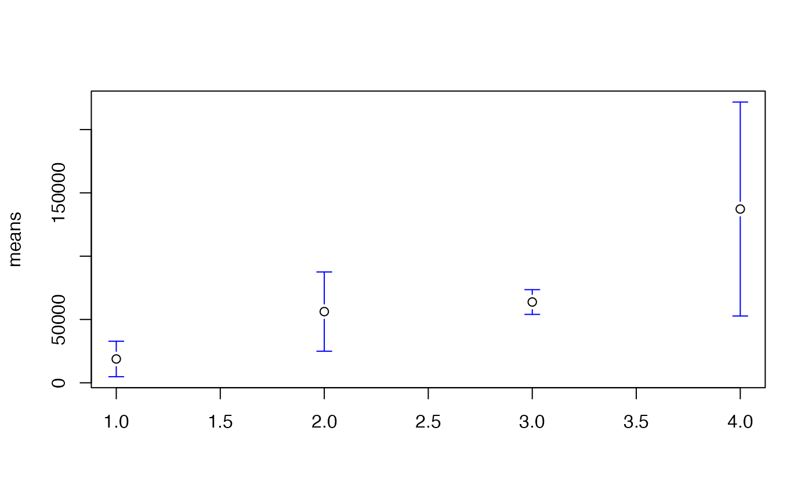

Plot Error Bars and Confidence Intervals
plotCI.RdGiven a set of x and y values and interval width or upper and lower bounds, plot the points with error bars. This can be a useful tool for visualizing confidence intervals.
plotCI(x, y = NULL, uiw, liw = uiw, ui, li, err='y', ylim=NULL, xlim=NULL, type="p", col=par("col"), barcol=col, pt.bg = par("bg"), sfrac = 0.01, gap=1, lwd=par("lwd"), lty=par("lty"), labels=FALSE, add=FALSE, xlab, ylab, minbar, maxbar, ... )
Arguments
| x,y | coordinates for the center of error bars. |
|---|---|
| uiw | width of the upper or right error bar. Set to |
| liw | width of the lower or left error bar. Defaults to same value as
|
| ui | upper end of error bars. Defaults to |
| li | lower end of error bars. Defaults to |
| err | direction for error bars. Set to "y" for vertical bars. Set to "x" for horizontal bars. Defaults to "y". |
| col | color of plotting character used center marker of error bars. Default is "black". |
| xlim, ylim | range of x/y values to include in the plotting area. |
| type | point/line type; passed to |
| barcol | color of the error bars. Defaults to the same value as
|
| pt.bg | background color of points (use
|
| sfrac | width of "crossbar" at the end of error bar as a fraction of the x plotting region. Defaults to 0.01. |
| gap | space left between the center of the error bar and the lines marking the error bar in units of the height (width) of the letter "O". Defaults to 1.0 |
| lwd | width of bar lines. |
| lty | line type of bar lines. |
| labels | either a logical value indicating whether the circles
representing the x values should be replaced with text giving the
actual values or a vector containing labels to use
instead. Defaults to |
| add | logical indicating whether error bars should be added to
the current plot. If |
| minbar | minumum allowed value for bar ends. If specified,
values smaller than |
| maxbar | maximum allowed value for bar ends. If specified,
values larger than |
| ... | optional plotting parameters |
| xlab | label for x axis. |
| ylab | label for y axis. |
See also
plotmeans provides an enhanced wrapper to
plotCI.
Examples
# plot means and data(state) tmp <- split(state.area, state.region) means <- sapply(tmp, mean) stdev <- sqrt(sapply(tmp, var)) n <- sapply(tmp,length) ciw <- qt(0.975, n) * stdev / sqrt(n) # plain plotCI(x=means, uiw=ciw)# prettier plotCI(x=means, uiw=ciw, col="black", barcol="blue", lwd=1)# give mean values plotCI(x=means, uiw=ciw, col="black", barcol="blue", labels=round(means,-3), xaxt="n", xlim=c(0,5) )# \dontshow{ ## Just for testing plotCI(x=means, uiw=NA)plotCI(x=means, uiw=NULL)plotCI(x=means, uiw=ciw)plotCI(x=means, uiw=ciw, liw=NULL)plotCI(x=means, uiw=ciw, liw=NA)plotCI(x=means, liw=ciw, ciw=NULL)plotCI(x=means, liw=ciw, ciw=NA)#> Warning: "ciw" is not a graphical parameter#> Warning: "ciw" is not a graphical parameter#> Warning: "ciw" is not a graphical parameter#> Warning: "ciw" is not a graphical parameter#> Warning: "ciw" is not a graphical parameter#> Warning: "ciw" is not a graphical parameter#> Warning: "ciw" is not a graphical parameterciw.na <- ciw ciw.na[3] <- NA plotCI(x=means, uiw=ciw.na, liw=ciw)plotCI(x=means, liw=ciw.na, uiw=ciw)# }